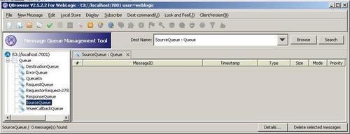
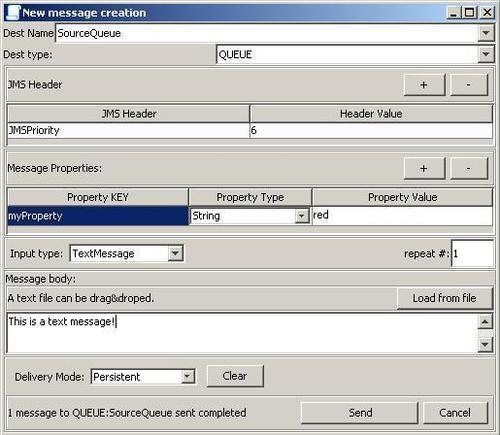
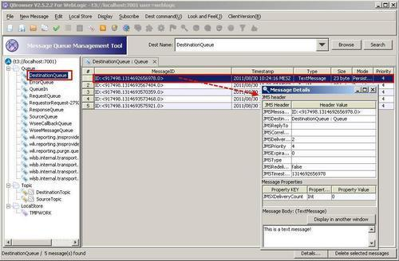

In the recipes in this chapter, we have seen how to use the WebLogic console to send messages to queues and to browse for messages in a queue/topic. This can be good enough for some simple quick tests.
In this recipe, we will show you how the testing and browsing can be supported by using an external tool called QBrowser.
Download the latest version (QBrowser_light_V2.5.2.2 at the time of writing) of QBrowser from here: http://sourceforge.net/projects/qbrowserv2/files/. Unzip the download to a local folder.
Before the tool can be started, open the file run_wls_mq_for_default_install_location.bat and change the settings of the BEA_HOME and WL_HOME variables according to your environment. After that, double-click on the file to start QBrowser.
First we have to connect to the JMS server. In QBrowser, perform the following steps:
weblogic into the User field and welcome1 into the Password field.
To put a message into the SourceQueue, perform the following steps:

The message is placed on the SourceQueue and if one of the OSB recipes consuming from the queue is deployed, the message will immediately get consumed by the proxy service.
Messages in a given queue can also be browsed in QBrowser. Perform the following steps to check for the messages in the DestinationQueue:

Since the JMS defines a standard way of how to access queues, there are other third-party tools available for accessing JMS queues and topics. This can simplify working with JMS with the downside of having to install an additional program.
There are other tools that support similar functionality such as QBrowser, they are:
We will see HermesJMS used and configured in the next recipe Testing JMS with soapUI.